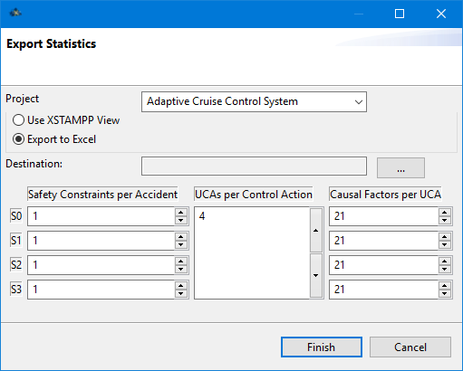
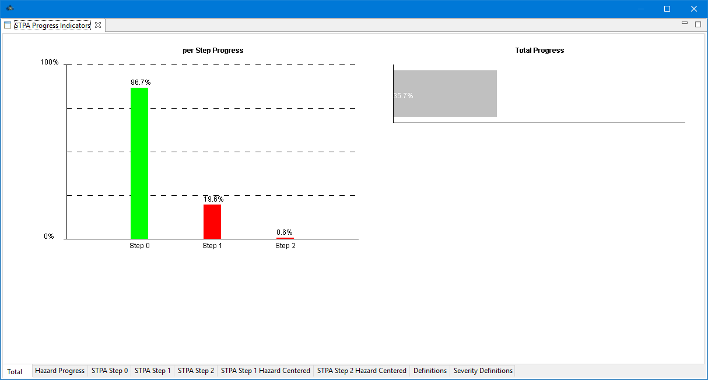

To gain an overview of the current progress of a project the A-STPA can create a configurable Progress Report.
The Report can either be viewen directly in XSTAMPP or exported as a Excel sheet in the .xlsx format.
As can be seen in the Progress Indicators Wizard the report can be further refined with setting parameters to set the definition-of-done to adapt the Progress Indicators to the project requirements.
